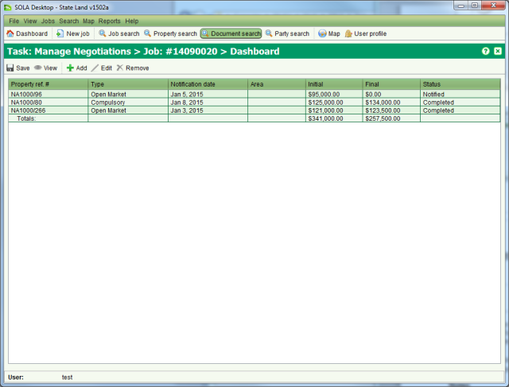
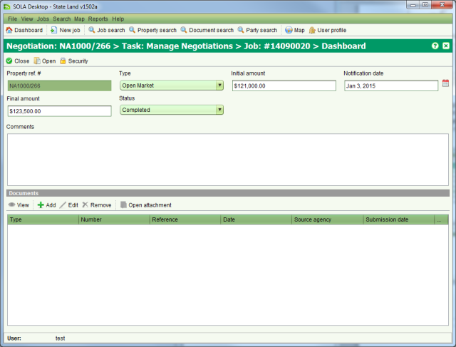

The state may need to enter negotiations with land owners and rightholders to secure new
land acquisitions or dispose of surplus state land. The Negotiate List screen can be used to
track and manage these negotiations. To access the Negotiate List screen you must  Start a Manage
Negotiations task from the Tasks tab of the Job Details screen.
Start a Manage
Negotiations task from the Tasks tab of the Job Details screen.

Negotiate List
To add a new negotiation to the list click  Add on the Negotiate List screen. This will open the Property Search screen
allowing you to select or find the property (state land or recorded property) the negotiation
relates to. Once you
Add on the Negotiate List screen. This will open the Property Search screen
allowing you to select or find the property (state land or recorded property) the negotiation
relates to. Once you  Select the
property in Property Search, the Negotiate Details screen will open automatically allowing
you to enter the negotiation information.
Select the
property in Property Search, the Negotiate Details screen will open automatically allowing
you to enter the negotiation information.

Negotiate Details
Enter the type of negotiation, the initial offer amount, the date of first notification and set the status to indicate the stage of the negotiation. You can optionally add scanned copies of any documents related to the negotiation such as sales contracts and sales conditions.
When you have completed editing the negotiation information,  Close the Negotiate Details screen and
Close the Negotiate Details screen and
 Save your changes from the Negotiate
List screen.
Save your changes from the Negotiate
List screen.
Negotiations between parties can be drawn out and convoluted. SOLA State Land attempts to capture key information (i.e. initial offer, final amount and negotiation status) to streamline management of the negotiation process. Where the negotiation results in multiple counter offers, the material generated by this process can be captured as document attachments.